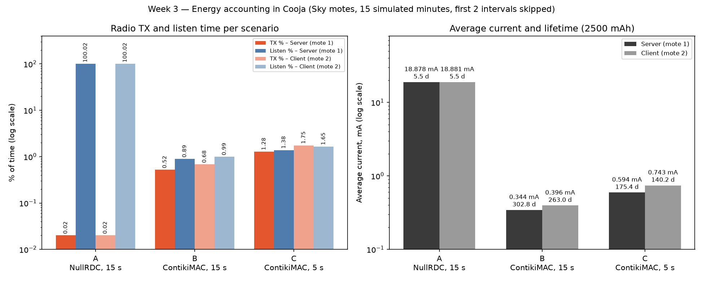

Efe Kuruçay · Instant Contiki 3.0 · Cooja · Sky motes · Powertrace every 30 s
| Scenario | RDC (Makefile) | SEND_INTERVAL |
|---|---|---|
| A | nullrdc_driver | 15 s |
| B | contikimac_driver | 15 s |
| C | contikimac_driver | 5 s |
| Scenario | Mote | CPU % | LPM % | TX % | Listen % | Radio on % | Iavg (mA) | Lifetime (2500 mAh) | PDR |
|---|---|---|---|---|---|---|---|---|---|
| A · NullRDC, 15 s | 1 server | 0.99 | 99.01 | 0.02 | 100.0 | 100.0 | 18.878 | 132 h = 5.5 days | 59 / 59 = 1.00 |
| 2 client | 1.08 | 98.92 | 0.02 | 100.0 | 100.0 | 18.881 | 132 h = 5.5 days | ||
| B · ContikiMAC, 15 s | 1 server | 1.84 | 98.16 | 0.52 | 0.89 | 1.41 | 0.344 | 7259 h = 302 days | 59 / 59 = 1.00 |
| 2 client | 2.19 | 97.81 | 0.68 | 0.99 | 1.66 | 0.396 | 6310 h = 263 days | ||
| C · ContikiMAC, 5 s | 1 server | 3.26 | 96.74 | 1.28 | 1.38 | 2.66 | 0.594 | 4208 h = 175 days | 179 / 179 = 1.00 |
| 2 client | 4.15 | 95.85 | 1.75 | 1.65 | 3.41 | 0.743 | 3367 h = 140 days |
Duty cycle = CPU %. Listen in A prints as 100.02 % because Energest's radio and CPU counters are sampled a few ticks apart; it means "always on".

Fields after P: address, sequence, all_cpu all_lpm all_transmit all_listen, all_idle_transmit, all_idle_listen, then the same six for the last interval.
2 nullsec CSMA nullrdc, channel check rate 128 Hz, radio channel 26 150718.705 ID:1 19206 P 0.18 4 49571 4864966 1248 4914628 0 0 9798 972897 189 982844 0 0 180718.725 ID:1 23046 P 0.18 5 59140 5838093 1376 5897539 0 0 9566 973127 128 982907 0 0 ID:2 TX: Hello 5 from the client ID:1 Server received: 'Hello 5 from the client'B — ContikiMAC, 15 s
2 nullsec CSMA ContikiMAC, channel check rate 8 Hz, radio channel 26 150719.743 ID:1 19206 P 0.18 4 115327 4799171 40631 47651 0 31095 20376 962311 6364 8929 0 6136 180719.72 ID:1 23046 P 0.18 5 130968 5766220 44361 56301 0 37309 15638 967049 3730 8650 0 6214 ID:2 TX: Hello 5 from the client ID:1 Server received: 'Hello 5 from the client'C — ContikiMAC, 5 s
2 nullsec CSMA ContikiMAC, channel check rate 8 Hz, radio channel 26 150720.409 ID:1 19206 P 0.18 4 184829 4729736 77898 71758 0 30835 34088 948593 13766 13689 0 6110 180720.528 ID:1 23046 P 0.18 5 214286 5682975 89084 85248 0 36997 29454 953239 11186 13490 0 6162 ID:2 TX: Hello 5 from the client ID:1 Server received: 'Hello 5 from the client'